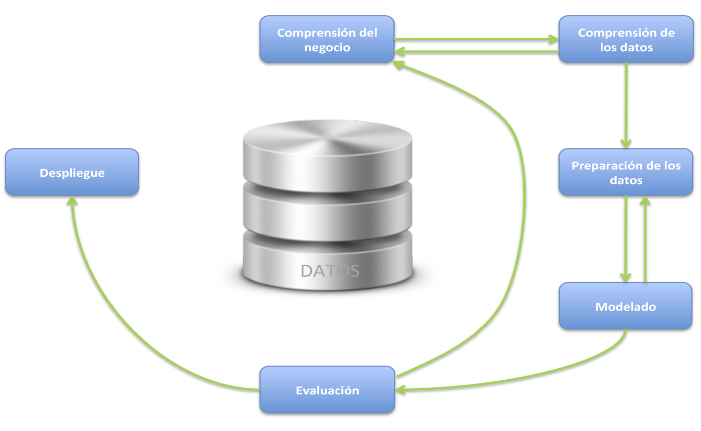

OVI - MODELADO DE DATOS
OVI - MODELADO DE DATOSDesde el punto de vista informático, una base de datos es un sistema formado por un conjunto de datos almacenados en discos que permiten el acceso directo a ellos y un conjunto de programas que manipulen ese conjunto de datos.
Por su parte, un sistema de Gestión de Bases de datos es un tipo de software muy específico dedicado a servir de interfaz entre la base de datos, el usuario y las aplicaciones que la utilizan; o lo que es lo mismo, una agrupación de programas que sirven para definir, construir y manipular una base de datos, permitiendo así almacenar y posteriormente acceder a los datos de forma rápida y estructurada.
Actualmente, las bases de datos están teniendo un impacto decisivo sobre el creciente uso de las computadoras.
Un modelo de base de datos es un tipo de modelo de datos que determina la estructura lógica de una base de datos y de manera fundamental determina el modo de almacenar, organizar y manipular los datos. Normalmente permite describir:
- • Entidades con las que cuenta el modelo base, atributos, tipos de datos y la forman en que se relacionan.
- • Las restricciones de integridad: Un conjunto de condiciones que deben cumplir los daros para reflejar la realidad deseada.
- • Las operaciones de manipulación de los datos, típicamente son operaciones de agregado, borrado, modificación y recuperación de los datos de la base.
Otro enfoque es pensar que un modelo de datos permite describir los elementos de la realidad que intervienen en un problema dado y la forma en que se relacionan esos elementos entre sí. No hay que perder de vista que una Base de Datos siempre está orientada a resolver un problema determinado, por lo que los dos enfoques propuestos son necesarios en cualquier desarrollo de software.
